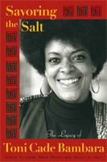

An anthology that celebrates the life and work of a major African American writer
An anthology that celebrates the life and work of a major African American writer


 An anthology that celebrates the life and work of a major African American writer
An anthology that celebrates the life and work of a major African American writer

|  |
Savoring the SaltThe Legacy of Toni Cade Bambaraedited by Linda Janet Holmes and Cheryl A. Wallpaper EAN: 978-1-59213-625-4 (ISBN: 1592136257) |
Selected as ��The Best of the Best� from the University Presses� Books You Should Know About� for the ALA Annual Conference, 2008
"Brilliance, courage and joy are what I knew of Toni Cade Bambara. Savoring the Salt mirrors her exhilarating intellect and the reach of her incomparable talents. Clearly, in these pages, the impact of her life and work�on family, friends, artists, students, colleagues�is as profound as it is forever."
—Toni Morrison
The extraordinary spirit of Toni Cade Bambara lives on in Savoring the Salt, a vibrant and appreciative recollection of the work and legacy of the multi-talented, African American writer, teacher, filmmaker, and activist. Among the contributors who remember Bambara, reflect on her work, and examine its meaning today are Toni Morrison, Amiri Baraka, Pearl Cleage, Ruby Dee, Beverly Guy-Sheftall, Nikki Giovanni, Avery Gordon Audre Lorde, and Sonia Sanchez.
Admiring readers have kept Bambara's fiction in print since her first collection of stories, Gorilla, My Love, was published in 1972. She continued to write-and her audience and reputation continued to grow-until her untimely death in 1995. Savoring the Salt includes excerpts from her published and unpublished writings, along with interviews and photos of Bambara. The mix of poets and scholars, novelists and critics, political activists, and filmmakers represented here testifies to the ongoing importance and enduring appeal of her work.
Excerpt available at www.temple.edu/tempress
"Toni Cade Bambara is one of the great literary figures of the late 20th century. She deserves more serious attention and sustained scrutiny. This magnificent volume is a first step toward this necessary effort!"
— Cornel West
"Toni Cade Bambara was a genius of language, an artist of connectedness, a lucid, inspired artisan of human freedom. This collection in many voices, hers threaded throughout, is a gift to her memory, a continuing rediscovery of her visionary work, and an important historical document."
— Adrienne Rich
"The breadth of outstanding contributors to this collection is evidence of Toni Cade Bambara�s enormous influence on writers, filmmakers, scholars, and community activists. Bambara�s artistry, insight, and lived example create a directive for 21st century artists: Tap into the genius within, stay rooted in local communities, and use culture as a tool for progressive social change."
— Louis Massiah
"Equally as valuable as the diversity of the ages, talents, and reputations of the contributors to this volume and the diversity of Bambara's work in the text is the profundity of the ideas and the simplicity of the language reflected in Savoring the Salt."
— Joyce A. Joyce, Temple University
"Many of the selections in Savoring the Salt aroused the impulse to go back and engage with the mind and the important contributions of Toni Cade Bambara. Since one of the highest purposes of critical/intellectual endeavor is to make us look again, the impulse aroused by these selections attests to the strength of the work."
—Veronica Marie Gregg, Hunter College
"This is a moving tribute to a seminal figure of American literature whose work continues to resonate."
—Booklist
�Nikki Giovanni, Amiri Baraka, Pearl Cleage and other African American luminaries remember the late writer and activist [Toni Cade Bambara]. What emerges is a portrait of a brilliant wordsmith and tireless revolutionary who 10 years after her death, is missed, says Cleage, �each and every day.��
—"Ms." Magazine
"This volume is a tribute to the legacy of Bambara, an appreciation of her work, and a celebration of her life and contribution to contemporary American literature and social consciousness. Editors Holmes, Bambara�s former student and a successful writer, and Wall, a writer and Rutgers University English professor, assembled the voices of distinguished art and literary personalities like Amiri Baraka, Abena Busia, Sonia Sanchez, Eleanor Taylor, Audre Lorde, Rudolph Byrd, actor Ruby Dee, and many more. They all write insightfully and affectionately, as they celebrate a truly genuine writer and social activist who made no apologies for being black and female. Recommended for public and academic libraries"
—Library Journal
"These carefully selected ruminations by Bambara�s peers stand as a testament to her and the impact of her iconoclastic vision and style�Savoring the Salt provides fond memories of an incandescent spirit."
—Filmbill
"These personal reflections, scholarly essays, poems, interviews, and photographs�many previously unpublished�pay high tribute to Bambara�[T]he volume provides a comprehensive approach to Bambara�s life and work. Recommended."
— Choice
Acknowledgements
Foreword: Pearl Cleage
Part I - Life/Work
Linda J. Holmes and Cheryl A. Wall: Savoring the Salt Introduction
Linda J. Holmes: Poised for the Light
Cheryl A. Wall: Toni's Obligato: Bambara and the African American Literary Tradition
Part II - Writing From Laughter, Writing From Rage
Toni Cade Bambara: "A Sort of Preface"
Salamishah Tillett: Straight-Up Fiction: Sittin' Down with Toni Cade Bambara's Gorilla, My Love
Kalamu ya Salaam: Searching for the Mother Tongue: An Interview with Toni Cade Bambara
Eleanor W. Traylor: The Language of Soul in Toni Cade Bambara's Re/Conceived Academy
Anne Wicke: Translating the Salt
Valerie Boyd: "She was just outrageously brilliant": Toni Morrison Remembers Toni Cade Bambara
Nikky Finney: The Making of Paper (for Toni Cade Bambara)
Part III - "Making Revolution Irresistible"
Toni Cade Bambara: From The Vietnam Notebooks
Amiri Baraka: Toni
Jayne Cortez: Cuba
Beverly Guy-Sheftall:Toni Cade Bambara, Black Feminist Foremother
Paula J. Giddings: At the Edges of the World
Farah Jasmine Griffin: How Do You Measure a Revolution? Lessons Learned from Toni Cade
Kristin Hunter Lattany: Drive This Thing
Part IV - Teaching Usable Truths
Toni Cade Bambara: From "The Children Who Got Cheated"
Audre Lorde: Dear Toni
Nikki Giovanni: We Drove Together: Remembering Toni Cade Bambara
Linda Janet Holmes: Lessons in Boldness, 101
Jan Carew: A Timeless Truthteller
Pepsi Charles: T.C.B.-Taking Care of Business
Rudolph Byrd: The Feeling of Transport
Abena P.A. Busia: Teaching Toni Cade Bambara Teaching: Learning with the Children in Toni Cade Bambara's "The Lesson"
Ruby Dee: Toni Cade Bambara
Part V - Guerrilla Filmmaking
Toni Cade Bambara: "Why Black Cinema? (1987)
Aishah Shahidah Simmons: Asserting My In(ter)dependence: The Evolution of NO!
Frances Negr�n-Mutaner: Things That Toni Taught Me
Part VI - "Have to be whole to see whole"
Toni Cade Bambara: From Deep Sightings and Rescue Missions
Bettina Aptheker: Toni Cade Bambara: A Political Life of the Spirit
Malaika Adero: Toni Cade Bambara to the Bone: Cultural Worker in the Black World and the South
Rebecca Wanzo: Terror at Home: Naturalized Victimization in Those Bones Are Not My Child
Avery F. Gordon: "something more powerful than skepticism"
Sonia Sanchez: Remembering and Honoring Toni Cade Bambara
Contributors
Index
 | Linda Janet Holmes is a writer, independent scholar, and activist. She is also co-author of Listen To Me Good: The Life Story of an Alabama Midwife . |
 | Cheryl A. Wall is Professor of English at Rutgers University, and the author of Worrying the Line: Black Women Writers, Lineage, and Literary Tradition, and Women of the Harlem Renaissance . She is the editor of The Writings of Zora Neale Hurston (2 volumes) and Changing Our Own Words: Criticism, Theory, and Writing by Black Women . |
African American Studies
Literature and Drama
American Studies
© 2015 Temple University. All Rights Reserved. This page: http://www.temple.edu/tempress/titles/1900_reg.html.